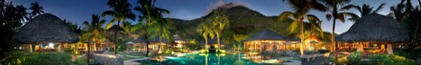

Типы отдыха
Пляжи
Один из самых приятных моментов в жизни – окунуться в прозрачную морскую воду и лечь на шезлонг под жаркие лучи солнца, не беспокоясь и не заботясь ни о чем. Пляжные туры – самый популярный вид отдыха во всем мире. Остров отдыха предлагает отправиться на пляжный отдых за границу, провести отпуск в лучших пляжных отелях мира, посмотреть на самые популярные курорты и получить массу новых положительных впечатлений.
К вашим услугам будут самые удивительные и модные рестораны, СПА-салоны и экскурсионные программы. Полюбуйтесь на самые красивые пляжи Средиземного моря, окунитесь в воды Карибского моря и Индийского океана, полюбуйтесь закатами в Юго-Восточной Азии!
Остров отдыха предлагает роскошный отдых в Болгарии, Греции, Доминикане, Египте, Испании, Италии, на Кипре, Кубе, Мальдивах, в Мексике, ОАЭ, Таиланде и на Шри-Ланке.
VIP-отдых и услуги

VIP-отдых для самых требовательных туристов, отели класса люкс, перелеты премиум и бизнес-класса, встреча у трапа самолета с цветами и быстрое прохождение всех необходимых формальностей в аэропорту. Отдохните как VIP-клиенты Острова отдыха, и вы узнаете, что такое настоящая роскошь и высочайший уровень сервиса. Исторические дворцы и отели для взыскательных туристов, уютная домашняя атмосфера и уединенность вилл класса люкс или блестящее общество в высокотехнологичных и современных интерьерах. К вашим услугам будут индивидуальные гиды и самые необыкновенные экскурсии, великолепные яхты, эксклюзивные рестораны и полеты на легкомоторных самолетах. Вы окажетесь в мире, где предусмотрены даже те мелочи, о которых вы бы не подумали. Множество приятных услуг помогут сделать ваш отдых незабываемым и порадуют ваших близких и любимых. VIP-отдых с «Остров отдыха» – для настоящих ценителей роскоши и престижа!
Экскурсионный отдых и круизы
Экскурсионные туры – лучший способ отдохнуть и прекрасно провести время в любой стране. Это великолепная возможность полюбоваться уникальными памятниками, принять участие в местных праздниках, познакомиться с интересными традициями и людьми, составить собственное представление о культуре других народов.
Профессиональные гиды и экскурсоводы поведают вам о таких событиях и фактах, которые вам трудно будет узнать самостоятельно. Экскурсионный отдых не только зарядит вас здоровьем и энергией, но и поможет вернуть интерес к жизни во всех ее появлениях.
Вас ждут самые важные картинные галереи мира и дегустации лучших вин, отдых на комфортабельных яхтах и визиты к пирамидам, крутые вечеринки на лучших дискотеках мира и расслабленная гармония самых совершенных СПА-салонов.
Горнолыжные курорты
Отдых на горнолыжных курортах – один из самых популярных способов провести отпуск в движении и получить массу приятных воспоминаний и отличный заряд бодрости. Остров отдыха предлагает горнолыжные туры на любой вкус и любое время: короткие поездки на выходные и длительные путешествия по самым интересным и популярным горнолыжным курортам мира!
Отправляйтесь на один из альпийских курортов Австрии и наслаждайтесь самыми обустроенными трассами Европы. Посмотрите на Доломитовые Альпы – самые красивые горы Италии, откройте для себя новые трассы Пиренеев, научитесь кататься в Родопах или Рильских горах Болгарии, посетите знаменитые курорты Грузии и России!
Горнолыжные курорты Франции встретят вас снежными вершинами и отелями с VIP-уровнем обслуживания. Остров отдыха предлагает активный отдых в следующих странах: Австрия, Андора, Болгария, Испания , Италия и другие.
Острова
Отдых на островах – прекрасное времяпровождение, которое дарит путешественникам гармонию покоя и море ярких впечатлений. Отправитесь ли вы на Мальдивские острова или приобретете тур на острова Карибского моря, будете осматривать пляжи и памятники Кипра или выберете загадочную Шри-Ланку – на островах вы найдете качественные отели, отличный сервис, а также великолепные и разнообразные пляжи.
Средиземноморские острова Испании и Италии радушно принимают гостей и поражают туристов своеобразием местной культуры и необычными праздниками. Канарские острова славятся удивительными вулканическими пейзажами, а архипелаги Индийского и Тихого океанов надолго запомнятся экзотическим буйством природы.
Остров отдыха предлагает роскошный отдых в следующих странах: Греция, Доминикана, Индонезия, Испания, Италия и другие.
Свадебные пакеты
Один из самых счастливых моментов в вашей жизни должен быть самым запоминающимся. Свадебное путешествие – это возможность начать новую жизнь со счастливых мгновений отдыха. Организация свадьбы за границей – дело куда более хлопотное, но если за него берутся профессионалы, то все будет в полном порядке! Символическая свадьба для обновления клятв, крещения, венчания – все эти церемонии можно провести в окружении очаровательной природы или в исторических зданиях, на райских пляжах или в престижных клубах, словом, так, как вы захотите!
Остров отдыха организует свадебные туры с вниманием ко всем мелочам! Каждый день путешествия станет для вас особенным и запоминающимся. Вы можете заказать свадебные церемонии в следующих странах: Греция, Доминикана, Индонезия, Испания и другие.